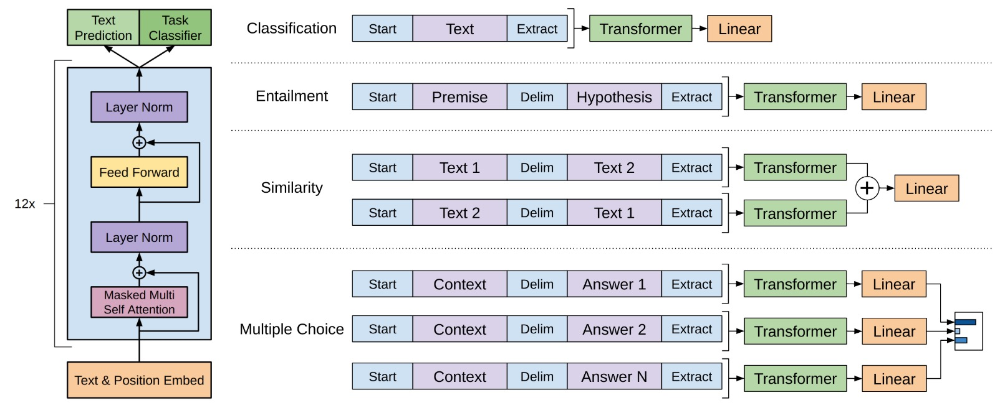

GPT (Generative Pre-Training)
论文提到现有NLP主要的痛点是不同任务之间没有进行整合，不能用一个结构解决所有问题。所以论文提出了GPT，它先是使用无标注数据进行预训练，再使用下游数据进行fine-tuning，另外提出了下游任务使用GPT的方法，将很多任务统一。
结构
无监督预训练阶段
该阶段使用未标注的预料，使用了语言模型的方式进行预训练，也就是使用上文的词预测下一个词，最大似然的公式为：
\[L_1(U) = \sum\limits_i \log P(u_i \mid u_{i-k}, ..., u_{i-1}; \Theta)\]其中\(U = \{u_1, ..., u_n\}\)代表预料中的句子，\(\Theta\)是模型的参数，可以看到这里用了一个窗口，只使用近\(k\)个词预测下一个词。
另外，GPT使用的是Transformer Decoder作为特征提取器，这里说的Decoder是指每次都预测一下次词的这个特性（也就是softmax），所以GPT可以用于生成式任务，但也就意味着GPT只是单向的，它只会向前面看，不会看后面的词。
有监督的微调阶段
对于下游的分类任务，假设我们的有标注数据为C，每个数据有\(x^1, ..., x^m\)这样\(m\)个特征以及标签\(y\)。把特征灌入预训练好的模型中，然后用最后一个词生成的隐向量进行softmax去预测标签，公式化这个过程：
\[P(y\mid x^1, ..., x^m) = softmax(h_l^m W_y)\]这里的\(h_l^m\)是最后一个词生成的隐向量，\(W_y\)是softmax的参数。然后，最大似然函数为：
\[L_2(C) = \sum\limits_{(x,y)} \log P(y \mid x^1, ..., x^m)\]另外，论文提到，如果将预训练的目标函数添加进来效果会更好，收敛也会更快，公式为：
\[L_3(C) = L_2(C) + \lambda \times L_1(C)\]下游任务
对于不同类型的下游任务，GPT提供了下面的方式进行建模（再配合上前面提到的目标函数），图示如下：

从图中可以看到，对于不同任务我们可以：
- 分类任务：直接接一个softmax就好了
- 文本蕴含（entailment）：将两个句子用分隔符隔开后接一个softmax
- 相似度：将两个句子A和B，先提取A+B的特征，同时提取B+A的特征，两个合起来做一个损失
- 问答（答案是多个候选集）：对每一个答案都做特征提取然后接一个多分类
看到这里我在想，既然GPT是生成式的，那么问答型的任务能否直接生成呢？GPT是否也可以用于翻译任务呢？